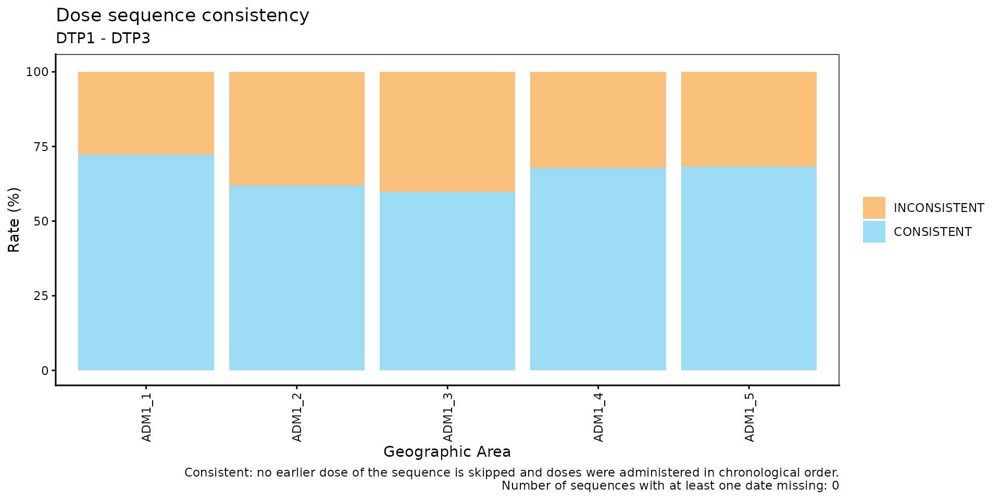
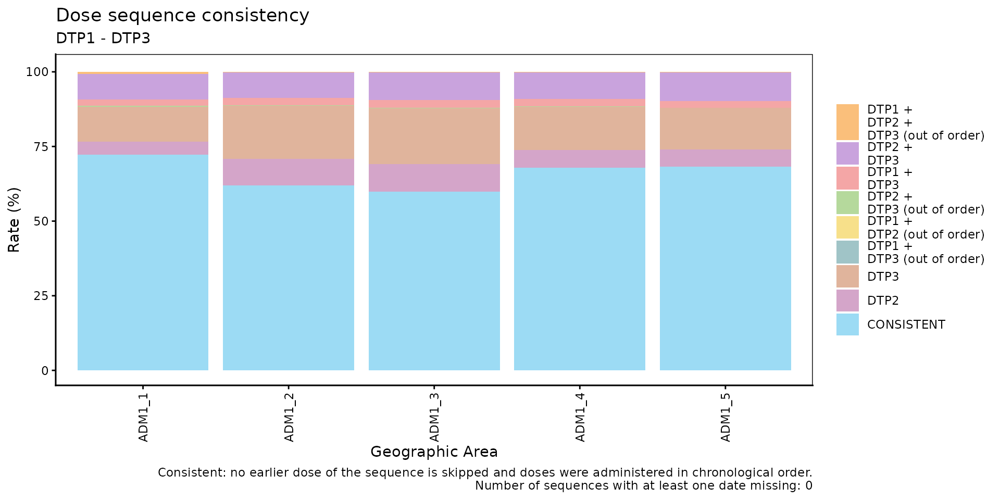
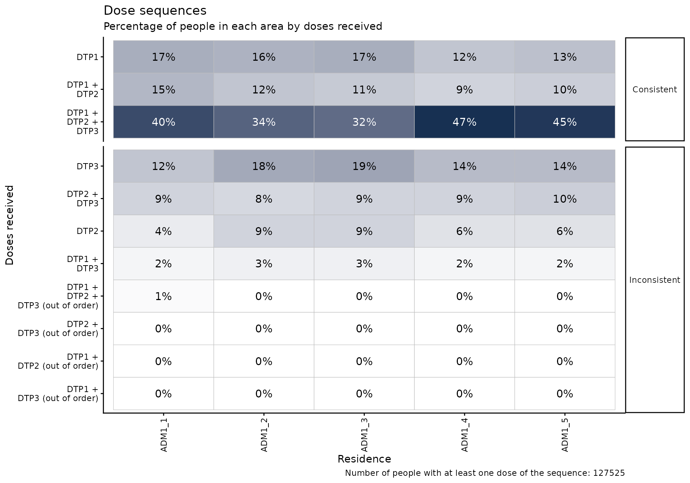
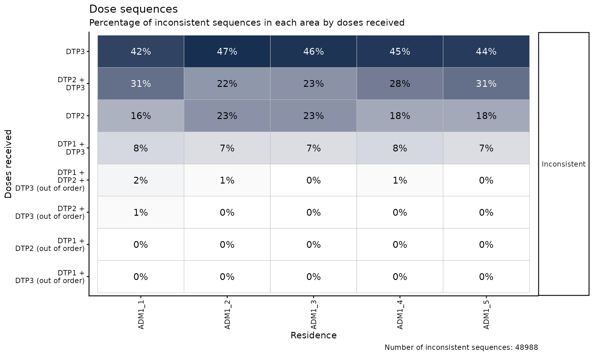

Dose Sequence Comparison
PAHO/CIM
October 30, 2026
Source:vignettes/articles/en/dose_sequence_comparison_en.Rmd
dose_sequence_comparison_en.RmdRationale
Many vaccines in a national immunization schedule are administered as an ordered series of doses (e.g., DTP1, DTP2 and DTP3). Each dose builds on the previous one, so a person should not have a later dose registered without the earlier doses, and each dose should be administered after the previous one.
When an Electronic Immunization Registry (EIR) contains people with a skipped dose (e.g., DTP1 and DTP3 but no DTP2), or with doses administered out of chronological order (e.g., DTP2 administered before DTP1), it usually points to data quality problems: doses registered with the wrong dose number, doses administered but never registered, or records that were not correctly linked to the same person. These problems bias any downstream analysis that relies on dose numbers, such as coverage, dropout or complete schedule analyses.
The dose sequence comparison module allows users to evaluate, person by person, whether the doses of an ordered sequence were registered consistently. A sequence is only considered consistent when it passes both checks:
- No skipped doses: no earlier dose of the sequence is missing.
- Chronological order: the doses received were administered in the order of the sequence.
Since this is a nominal indicator (evaluated person by person), each person is assigned to a single place of residence, so all results can be disaggregated by geographic level.
Note
All functions used for dose sequence comparison analyses within immunABC begin with the
sc_prefix.
Glossary
Political Geographic Boundaries
Throughout this vignette, we will make reference to different levels of political geographic boundaries. These levels are defined by the country/territory and can have different names from country to country. immunABC is agnostic to these names and requires the user to recode their variable names to fit the immunABC structure.
Namely, immunABC can distinguish three administrative levels, which listed from top to bottom level are: ADM0, ADM1 and ADM2.
- ADM0: The country. This is the top-most administrative level.
- ADM1: The first geographic subdivision in the country. ADM0 contains several ADM1 subdivisions.
- ADM2: The second geographic subdivision in the country. Each ADM1 contains several ADM2 subdivisions.
Dose Sequence
An ordered vector of doses to evaluate, passed to every
sc_ function through the vaccines parameter,
e.g. c("DTP1", "DTP2", "DTP3"). The order of the vector is
the order in which the doses should be administered. Only people with at
least one dose of the sequence are evaluated.
Sequence Consistency Categories
A sequence is consistent when:
- No earlier dose is skipped, that is, the doses received are the first doses of the sequence. A person who has not finished the sequence yet (e.g., only DTP1, or DTP1 and DTP2) can be consistent: they may simply not have reached the age for the next dose, or may have dropped out (see the Nominal Dropout Rate module).
- Every dose received was administered after the previous dose
received in the sequence. By default, two doses administered on the same
day are also considered out of order (see
allow_same_day).
A sequence is inconsistent when it fails either
check: a dose is missing before the last dose received, and/or the doses
were administered out of chronological order. When a person has at least
two doses of the sequence and one of them has no date_vax,
the chronological order cannot be fully evaluated; if no other problem
is found, the sequence is classified as DATE_MISSING.
For a DTP1, DTP2, DTP3
sequence:
| Doses received | Dates | Category | Skipped doses | Out of order |
|---|---|---|---|---|
DTP1 |
CONSISTENT |
|||
DTP1 + DTP2 |
DTP1 before DTP2 | CONSISTENT |
||
DTP1 + DTP2 + DTP3 |
DTP1 before DTP2 before DTP3 | CONSISTENT |
||
DTP1 + DTP2 |
DTP2 before DTP1 | INCONSISTENT |
✔ | |
DTP1 + DTP2 |
DTP2 with no date_vax
|
DATE_MISSING |
||
DTP2 |
INCONSISTENT |
DTP1 |
||
DTP3 |
INCONSISTENT |
DTP1 + DTP2 |
||
DTP1 + DTP3 |
DTP1 before DTP3 | INCONSISTENT |
DTP2 |
|
DTP2 + DTP3 |
DTP3 before DTP2 | INCONSISTENT |
DTP1 |
✔ |
Usage
Load Data
The functions in this module require your EIR dataset in the standard immunABC format.
EIR
The immunabc::immunABC.EIR data frame provides a
simulated, nominal-level table representing individual vaccination
events from an Electronic Immunization Registry (EIR). Each row
corresponds to a single vaccination act for a person.
immunABC.EIR %>% head() %>% kable(caption = "Example Electronic Immunization Registry")| ID | date_birth | date_vax | ADM1_residence | ADM2_residence | ADM1_occurrence | ADM2_occurrence | dose |
|---|---|---|---|---|---|---|---|
| 191997 | 2023-08-08 | 2023-12-26 | ADM1_4 | ADM2_4_35 | ADM1_4 | ADM2_4_35 | DTP2 |
| 212189 | 2023-12-20 | 2023-12-26 | ADM1_5 | ADM2_5_61 | ADM1_5 | ADM2_5_61 | BCG RN |
| 118063 | 2022-09-15 | 2023-12-26 | ADM1_2 | ADM2_2_5 | ADM1_2 | ADM2_2_5 | DTP1 |
| 118063 | 2022-09-15 | 2023-12-26 | ADM1_2 | ADM2_2_5 | ADM1_2 | ADM2_2_5 | YFV1 |
| 130751 | 2022-10-27 | 2023-12-12 | ADM1_5 | ADM2_5_55 | ADM1_5 | ADM2_5_55 | YFV1 |
| 136532 | 2021-09-21 | 2023-12-26 | ADM1_3 | ADM2_3_12 | ADM1_3 | ADM2_3_12 | SRP1 |
-
ID: Unique person identification number. -
date_birth: Date of birth of person. -
date_vax: Date of vaccination event. -
ADM1_residence/ADM2_residence: First and second geographic administrative levels of residence. -
ADM1_occurrence/ADM2_occurrence: First and second geographic administrative levels where the vaccination occurred. -
dose: Combined variable representing vaccine type and dose number (e.g., DTP1).
Dose Sequence Comparison Analysis
Expected Workflow
The sc_ suite contains four functions that work
together:
-
sc_rate()— computes the percentage of consistent and inconsistent sequences, aggregated by geographic level. -
sc_barplot()— visualizes the output ofsc_rate()as a stacked bar chart. -
sc_heatmap()— visualizes how people are distributed across every combination of doses received, consistent and inconsistent, as a heatmap. -
sc_inconsistent()— lists each person with an inconsistent sequence, with the date of each dose in a schedule-like table.
The figure below shows the expected workflow.

Throughout this vignette, we will evaluate the DTP1,
DTP2, DTP3 sequence.
dtp_sequence <- c("DTP1", "DTP2", "DTP3")Step 1 — Compute sequence consistency with
sc_rate()
sc_rate() evaluates each person’s sequence and returns,
for each geographic unit, the count and percentage of people in each
category. The aggregated parameter controls how
inconsistent sequences are shown:
-
aggregated = TRUE(default): classifies each sequence asCONSISTENT,INCONSISTENTorDATE_MISSING. -
aggregated = FALSE: keepsCONSISTENTandDATE_MISSINGas single categories, and breaks downINCONSISTENTinto each combination of doses received (e.g.,DTP1 + DTP3). Combinations administered out of chronological order are flagged with the(out of order)suffix (e.g.,DTP1 + DTP2 (out of order)).
rate_aggregated <- sc_rate(
data.EIR = immunABC.EIR,
vaccines = dtp_sequence,
geo_level = "ADM1",
aggregated = TRUE
)## Warning in .validate_duplicates_sequence(prepare_EIR, vaccines): Warning: 1800
## ID-dose combination(s) are duplicated in data.EIR. Only the earliest date_vax
## of each one is kept. We recommend you verify for duplicates before running the
## process to increase accuracy.
rate_aggregated %>% kable(digits = 2, caption = "Sequence consistency by ADM1 (aggregated)")| ADM1 | sequence | consistent | n | total | rate |
|---|---|---|---|---|---|
| ADM1_1 | CONSISTENT | TRUE | 2505 | 3468 | 72.23 |
| ADM1_1 | INCONSISTENT | FALSE | 963 | 3468 | 27.77 |
| ADM1_2 | CONSISTENT | TRUE | 11894 | 19187 | 61.99 |
| ADM1_2 | INCONSISTENT | FALSE | 7293 | 19187 | 38.01 |
| ADM1_3 | CONSISTENT | TRUE | 52960 | 88447 | 59.88 |
| ADM1_3 | INCONSISTENT | FALSE | 35487 | 88447 | 40.12 |
| ADM1_4 | CONSISTENT | TRUE | 7273 | 10707 | 67.93 |
| ADM1_4 | INCONSISTENT | FALSE | 3434 | 10707 | 32.07 |
| ADM1_5 | CONSISTENT | TRUE | 3905 | 5716 | 68.32 |
| ADM1_5 | INCONSISTENT | FALSE | 1811 | 5716 | 31.68 |
Notice the warning: when a person has the same dose registered more
than once, only the earliest date_vax is kept. We recommend
checking for duplicates before running the analysis.
rate_disaggregated <- sc_rate(
data.EIR = immunABC.EIR,
vaccines = dtp_sequence,
geo_level = "ADM1",
aggregated = FALSE
)
rate_disaggregated %>%
filter(ADM1 == "ADM1_1") %>%
kable(digits = 2, caption = "Sequence consistency in ADM1_1 (disaggregated)")| ADM1 | sequence | consistent | n | total | rate |
|---|---|---|---|---|---|
| ADM1_1 | CONSISTENT | TRUE | 2505 | 3468 | 72.23 |
| ADM1_1 | DTP1 + DTP2 (out of order) | FALSE | 3 | 3468 | 0.09 |
| ADM1_1 | DTP1 + DTP2 + DTP3 (out of order) | FALSE | 22 | 3468 | 0.63 |
| ADM1_1 | DTP1 + DTP3 | FALSE | 76 | 3468 | 2.19 |
| ADM1_1 | DTP1 + DTP3 (out of order) | FALSE | 1 | 3468 | 0.03 |
| ADM1_1 | DTP2 | FALSE | 154 | 3468 | 4.44 |
| ADM1_1 | DTP2 + DTP3 | FALSE | 298 | 3468 | 8.59 |
| ADM1_1 | DTP2 + DTP3 (out of order) | FALSE | 7 | 3468 | 0.20 |
| ADM1_1 | DTP3 | FALSE | 402 | 3468 | 11.59 |
Parameters accepted
-
data.EIR: EIR data frame in immunABC format. -
vaccines: Ordered character vector of at least two doses, e.g.c("DTP1", "DTP2", "DTP3"). -
geo_level:"ADM0"(default),"ADM1", or"ADM2". -
aggregated: Logical, defaults toTRUE. Whether to pool all inconsistent sequences into a singleINCONSISTENTcategory. -
birth_cohorts: Numeric vector of birth cohort year(s) to filter to. DefaultNULLuses all available cohorts. -
allow_same_day: Logical, defaults toFALSE. Whether two consecutive doses administered on the same day are considered in chronological order. Doses of the same vaccine series should not be administered on the same day, but this may be relaxed for sequences that combine different vaccines. -
fix_residence: Logical, defaults toTRUE. See Handling residence inconsistencies below.
The output contains the sequence category, a
consistent column (TRUE/FALSE,
NA for DATE_MISSING), the number of people
(n), the total number of people with at least one dose of
the sequence (total) and the percentage
(rate).
Handling residence inconsistencies
Since each person is evaluated as a whole, they must be assigned to a
single place of residence. If a person’s registered residence is not the
same on every record (e.g., they moved between their DTP1 and DTP3
doses, and the older record was never updated), the sc_
functions warn about it, and the fix_residence parameter
controls how it is handled:
-
fix_residence = TRUE(default): all of a person’s records are corrected to theADM1_residence/ADM2_residencetied to their most recent vaccination. -
fix_residence = FALSE: residence values are left as recorded, and each person is assigned the residence of their first record.
sc_rate() and sc_heatmap() only check
residence when results are disaggregated below "ADM0".
sc_inconsistent() always checks it, since its output
includes the residence of each person.
Step 2 — Visualize sequence consistency with
sc_barplot()
The output of sc_rate() can be passed directly to
sc_barplot() to produce a stacked bar chart per geographic
unit.
sc_barplot(
data = rate_aggregated,
sequence_name = "DTP1 - DTP3"
)
With aggregated = FALSE, each inconsistent combination
is shown in a different color:
sc_barplot(
data = rate_disaggregated,
sequence_name = "DTP1 - DTP3"
)
Parameters accepted
-
data: Output ofsc_rate(). -
sequence_name: Display label for the dose sequence in the plot subtitle. Default:"dose sequence". -
within_ADM1: Character vector to filter to specific ADM1 units whengeo_level = "ADM2". Default:NULL. -
plot_missing: Boolean. IfTRUE(default),DATE_MISSINGsequences are shown as a separate bar segment (gray) so all bars sum to 100%.
Interpretation
Each bar represents a geographic unit. The CONSISTENT
segment (blue) is shown at the bottom of each bar, the inconsistent
segments stack on top of it, and DATE_MISSING (gray) is
shown at the top. Areas with a larger share of inconsistent sequences
should be prioritized for data quality review. The disaggregated view
shows which dose is usually skipped: for example, a large share of
DTP2 + DTP3 (skipped DTP1) may indicate that
first doses are being registered with the wrong dose number, or that
first doses are administered somewhere that does not report to the
EIR.
Sequences flagged (out of order) are usually rare, so
even small percentages deserve attention. They may be caused by typos in
date_vax, by doses registered with the wrong dose number
(e.g., DTP2 registered as DTP1 and vice versa), or by records from two
different people linked to the same ID. The Date Consistency
Comparison module can help investigate the dates involved.
Step 3 — Explore every combination of doses received with
sc_heatmap()
sc_heatmap() takes the EIR directly and shows, for each
geographic unit of residence (columns), the percentage of people with
each combination of doses received (rows). Rows are split into
panels:
-
Consistent: the “diagonal” of the sequence, from
fewest to most doses (
DTP1,DTP1 + DTP2,DTP1 + DTP2 + DTP3). - Date missing: sequences that cannot be fully evaluated (only shown if there are any).
- Inconsistent: every inconsistent combination, from most to least frequent.
By default, consistent sequences are shown and percentages are calculated over all people with at least one dose of the sequence in each area, so each column adds up to 100%. Looking only at what is wrong, without the context of what is right, does not show how big the problem is.
sc_heatmap(
data.EIR = immunABC.EIR,
vaccines = dtp_sequence,
geo_level = "ADM1"
)
Once the size of the problem is clear, set
show_consistent = FALSE to deep dive into the inconsistent
sequences. Percentages are recalculated over the inconsistent sequences
only, so each column adds up to 100% of the inconsistent sequences in
that area:
sc_heatmap(
data.EIR = immunABC.EIR,
vaccines = dtp_sequence,
geo_level = "ADM1",
show_consistent = FALSE
)
Parameters accepted
-
data.EIR: EIR data frame in immunABC format. -
vaccines: Ordered character vector of at least two doses. -
geo_level: Geographic level of residence to show as columns:"ADM0"(default),"ADM1", or"ADM2". -
show_consistent: Logical, defaults toTRUE. Whether to show consistent andDATE_MISSINGsequences (percentages over all people), or only inconsistent sequences (percentages over inconsistent sequences). -
within_ADM1: Character vector to filter to specific ADM1 units. Default:NULL. -
birth_cohorts: Numeric vector of birth cohort year(s) to filter to. DefaultNULLuses all available cohorts. -
allow_same_day: Logical, defaults toFALSE. -
fix_residence: Logical, defaults toTRUE. -
digits: Number of decimal digits in the labels. Default:0.
Interpretation
Compare each inconsistent row against the consistent panel: an inconsistent combination that is as frequent as a consistent one points to a systematic registration problem rather than occasional data entry errors. When one combination dominates in a specific area (a darker cell than the rest of its row), it suggests a local registration practice worth investigating.
Step 4 — Inspect individual inconsistent sequences with
sc_inconsistent()
sc_inconsistent() returns a person-level table of all
inconsistent sequences in a schedule-like format: one row per person and
one column per dose of the sequence, containing the date each dose was
administered (NA if it was not received).
inconsistent_df <- sc_inconsistent(
data.EIR = immunABC.EIR,
vaccines = dtp_sequence
)
inconsistent_df %>% head(10) %>% kable(caption = "Sample of inconsistent sequences")| ID | date_birth | ADM1_residence | ADM2_residence | DTP1 | DTP2 | DTP3 | sequence | skipped_doses | out_of_order |
|---|---|---|---|---|---|---|---|---|---|
| 94 | 2021-05-05 | ADM1_3 | ADM2_3_10 | NA | NA | 2022-07-09 | DTP3 | DTP1 + DTP2 | FALSE |
| 96 | 2018-09-18 | ADM1_3 | ADM2_3_7 | NA | 2022-08-14 | NA | DTP2 | DTP1 | FALSE |
| 98 | 2020-05-04 | ADM1_2 | ADM2_2_5 | NA | NA | 2023-01-10 | DTP3 | DTP1 + DTP2 | FALSE |
| 99 | 2020-05-04 | ADM1_2 | ADM2_2_5 | NA | NA | 2023-01-10 | DTP3 | DTP1 + DTP2 | FALSE |
| 115 | 2020-01-13 | ADM1_3 | ADM2_3_21 | NA | 2023-11-23 | NA | DTP2 | DTP1 | FALSE |
| 121 | 2020-03-03 | ADM1_2 | ADM2_2_5 | NA | NA | 2023-09-24 | DTP3 | DTP1 + DTP2 | FALSE |
| 132 | 2020-03-14 | ADM1_2 | ADM2_2_5 | NA | NA | 2022-03-29 | DTP3 | DTP1 + DTP2 | FALSE |
| 135 | 2020-04-07 | ADM1_2 | ADM2_2_5 | NA | NA | 2022-04-26 | DTP3 | DTP1 + DTP2 | FALSE |
| 136 | 2019-12-02 | ADM1_3 | ADM2_3_8 | NA | NA | 2022-09-27 | DTP3 | DTP1 + DTP2 | FALSE |
| 142 | 2019-12-31 | ADM1_2 | ADM2_2_5 | NA | NA | 2022-02-18 | DTP3 | DTP1 + DTP2 | FALSE |
Parameters accepted
-
data.EIR: EIR data frame in immunABC format. -
vaccines: Ordered character vector of at least two doses. -
birth_cohorts: Numeric vector of birth cohort year(s) to filter to. DefaultNULLuses all available cohorts. -
allow_same_day: Logical, defaults toFALSE. -
fix_residence: Logical, defaults toTRUE.
The sequence column shows the combination of doses
received, the skipped_doses column shows the doses missing
before the last dose received (NA if none), and the
out_of_order column shows whether the doses were
administered out of chronological order. A person can have both problems
at once. DATE_MISSING sequences are not included. This
table can be exported for record-level correction workflows, for
example, to look for the skipped doses under a different dose number or
a different ID.
Summary
The sc_ module provides a complete pipeline for
assessing whether ordered dose sequences are registered consistently in
EIR data, where a sequence is only consistent when no dose is skipped
and the doses were administered in chronological order.
sc_rate() and sc_barplot() give a geographic
overview of inconsistent sequences, sc_heatmap() puts every
inconsistent combination of doses in the context of the consistent ones,
and sc_inconsistent() allows record-level inspection of the
people with inconsistent sequences. Together, they help data managers
and public health analysts detect and prioritize data quality
corrections before analyses that rely on dose numbers, such as coverage,
dropout or complete schedule analyses.